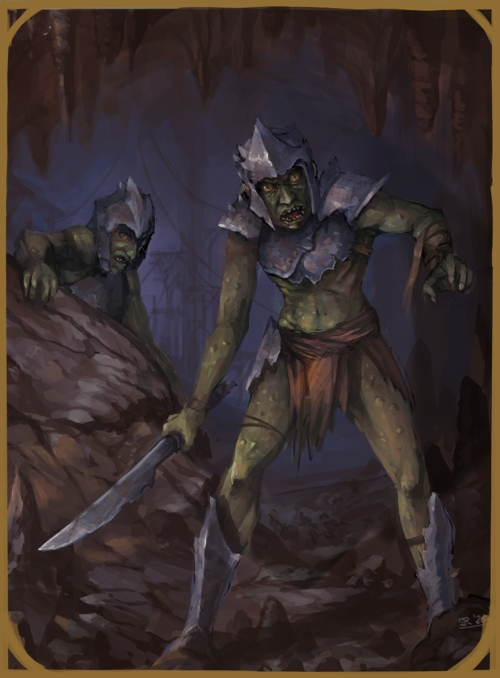

GOBLIN
SMALL HUMANOID

Goblins are small green-brown or grey skinned humanoids who dwell in the upper to mid level
of caves and caverns. Goblins, like many of their similar kin, are
short lived and prone to problematic body disfigurements and diseases.
Goblins tend to be extremely aggresive and an invasive species with little care of
any that would be in their expasion's path.
GOBLIN CULTURE
The goblin culture is tribal and patriarchal, one whose infestations lie deep in caves and
caverns. They function upon the basis of power, ruled by
very short reigned overlords and chieftains, all the while spreading and multiplying
at ridiculous rates.
The concept of civilization and beauty is lost on goblins, as the speed at which
they live and propagate tends to outlive the need to cultivate or build beyond what is absolutely necessary.
However goblins also have a love of power, or of anything with the appearance of power, and
will go out of their way to amass wealth, carvings and coin of civilized creation.
Due to this bowing to power, goblin tribes are easily bound to servitude by their
larger kin like hobgoblins and orcs.
GOBLIN RELIGION
Goblins, much like the all orc-like species, follow Korahg'gan, he who is blood, shadow and flame.
However, goblins are of a lesser intelligence than orcs and won't often think of such things
as religion to define their ways. Goblins are vicious by nature and have no need of a
greater path as an excuse to kill and eat any other creatures that venture within their
caves or to take over a new living area to infest.
Goblins also tend to worship the greatest among them, and their leaders are
looked upon as godly figures, at least until they are overthrown.
RELIGION - KORAHG'GAN, THE BLOOD SHADOW
| Status | Name | Realms |
|---|
| God | Korr'agghan | Flame/Blood/Shadow |
GOBLIN DIMORPHISMS
The male and female of the goblin species are, much like humanity, different in build and
shape, but to a slightly larger extent. Males are of stronger build and larger frame, as well
as being taller by nature, while females are much smaller, frailer and weaker.
Beyond this, they are very much alike in their mind and abilities.
GOBLIN STATISTICS
ADULT MALE
GENERAL ATTRIBUTES
| AGE | HEIGHT | SIZE | SIGHT |
| 6-13 | ~3'06'' | Small - 0.5x0.5 | 10/10/5 |
MOVEMENT
| RUNNING | CLIMBING | SWIMMING | FLYING |
| 3 - Perfect | 2 - Rough | 1 - Rough | - |
ABILITY SCORES
| STR | VIT | CON | AGI | DEX | INS | INT | WILL | WIS | CHA | BEA |
| 5 | 5 | 5 | 6 | 5 | 5 | 4 | 3 | 3 | 4 | 3 |
COMBAT ABILITY
| WOUNDS | INITIATIVE | ATTACK (MELEE) | ATTACK (RANGED) | MIGHT |
| 5 | 10 | 5 | 5 | 5 |
| DODGE | PARRY | DAMAGE | NAT. ARMOUR | PRESENCE (POWER) | PRESENCE (BEAUTY) |
| 5 | 2 | 1 | 1 | 4 | 3 |
NATURAL WEAPONS
| WEAPON | TYPE | MIGHT | DAMAGE | ADDITIONAL |
| None | - | - | - |
ADULT FEMALE
GENERAL ATTRIBUTES
| AGE | HEIGHT | SIZE | SIGHT |
| 6-13 | ~3'01'' | Small - 0.5x0.5 | 10/10/5 |
MOVEMENT
| RUNNING | CLIMBING | SWIMMING | FLYING |
| 3 - Perfect | 2 - Rough | 1 - Rough | - |
ABILITY SCORES
| STR | VIT | CON | AGI | DEX | INS | INT | WILL | WIS | CHA | BEA |
| 4 | 4 | 5 | 6 | 5 | 5 | 4 | 3 | 3 | 4 | 3 |
COMBAT ABILITY
| WOUNDS | INITIATIVE | ATTACK (MELEE) | ATTACK (RANGED) | MIGHT |
| 4 | 10 | 5 | 5 | 4 |
| DODGE | PARRY | DAMAGE | NAT. ARMOUR | PRESENCE (POWER) | PRESENCE (BEAUTY) |
| 5 | 2 | 1 | 1 | 3 | 3 |
NATURAL WEAPONS
| WEAPON | TYPE | MIGHT | DAMAGE | ADDITIONAL |
| None | - | - | - |